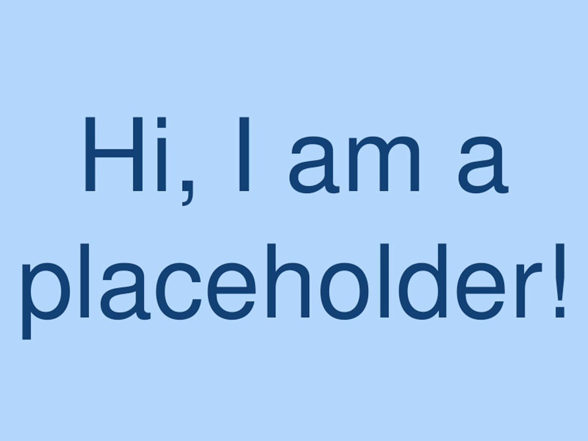

ABOUT
I am an aspiring backend, software, and full stack developer with a strong foundation in Python, Java, and web development. My journey began with mastering the fundamentals of programming, and over time I have developed a passion for building efficient, scalable, and user-focused applications. I enjoy solving problems through clean code and logical design, and I am continuously sharpening my skills in backend development while expanding into full stack technologies. My goal is to leverage my growing expertise to contribute to real-world projects, collaborate with teams, and eventually build innovative software solutions that create meaningful impact.